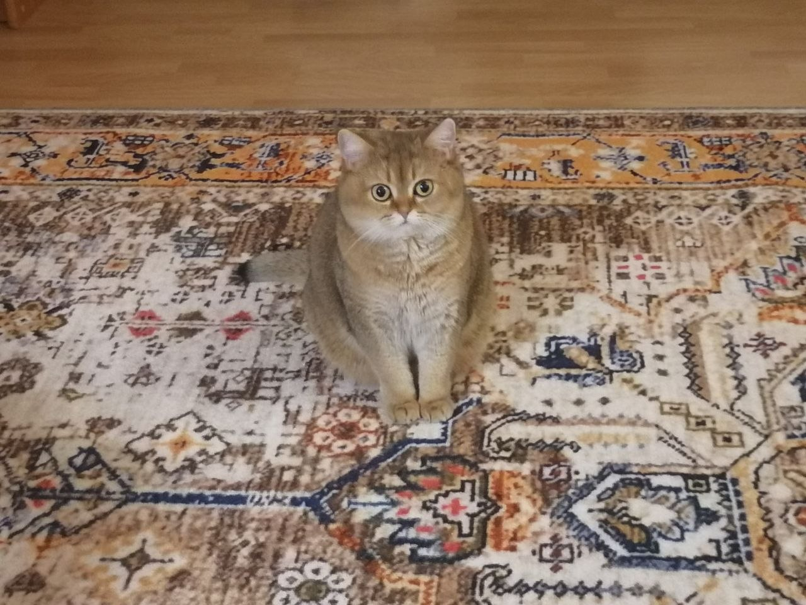

Фритрек и нулевой спринт: Подготовка к работе

<START>
Это было самое начало пути. На этом этапе важно было проникнуться основами и настроиться на учёбу. И, возможно, подумать, как новые знания могут повлиять на ваше будущее.
Лето. Самое время посмотреть что-нибудь для саморазвития. Прошла всю бесплатную часть и стало скучно(